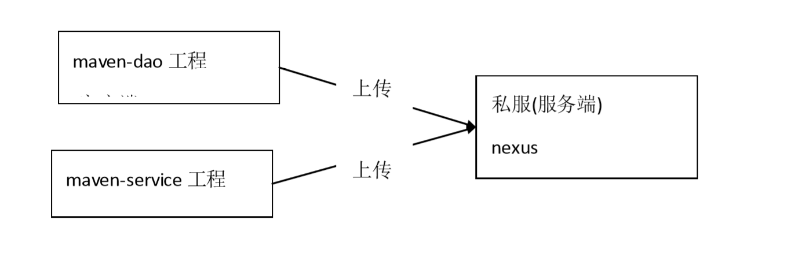

Maven高级应用
Maven基础知识
Maven是一个项目管理工具
- 依赖管理：
- Maven对项目中jar包的管理过程。传统工程我们直接把jar包放置在项目中。
- maven工程真正的jar包放置在仓库中，项目中只用放置jar包的坐标
- 仓库的种类：本地仓库，远程仓库【私服】，中央仓库
- 仓库之间的关系：当我们启动一个maven工程的时候，maven工程会通过pom文件中jar- - 默认情况下，如果本地仓库没有对应jar包，maven工程会自动去中央仓库下载jar包
- 在公司中，如果本地没有对应jar包，会先从私服下载jar包，如果私服没有jar包，可以从中央仓库下载，可以从本地上传。
- 一键构建：maven自身集成了tomcat插件，可以对项目进行编译，测试，打包，安装，发布等操作。
- 常用命令：clean，compile,test,package,install,deploy.
- maven三套生命周期：清理生命周期，默认生命周期，站点生命周期。
maven导入jar包时冲突的解决
方式一：
- 第一声明优先原则：哪个jar包的坐标在靠上的位置，这个jar包就是先声明的。
- 先声明的jar包坐标下的依赖包，可以优先进入项目中。
maven导入jar包中的一些概念
- 直接依赖：项目中直接导入的jar包，就是该项目的直接依赖包。
- 传递依赖：项目中没有直接导入的jar包，可以通过项目直接依赖jar包传递到项目中去。
方式二：
- 路径近者优先原则。直接依赖路径比传递依赖路径近，那么最终项目进入的jar包会是路径近的直接依赖包。
方式三：
直接排除法。
- 当我们要排除某个jar包下依赖包，在配置exclusions标签的时候，你不可以不写版本号。
- 因为此时依赖包使用的版本和默认和本jar包一样.
pom文件内标签的讲解
maven工程是可以分父子依赖关系的。
范式依赖别的项目后，拿到的别的项目的依赖包，都属于传递依赖。
比如：当前A项目，被B项目依赖，那么我们A项目中所有jar包都会传递到B项目中。
B项目开发者，如果再在B项目中导入一套ssm框架的jar包，对于B项目是直接依赖，
那么直接依赖jar包就会把我们A项目传递过去的jar包覆盖掉。
为了防止以上情况的触发，我们可以吧A项目中主要jar包的坐标锁住，那么其他依赖该项目的项目中，
即便是有同名jar包直接依赖，也无法覆盖
maven工程拆分与聚合的思想
工程和模块的关系以及继承和依赖的概念
工程和模块的区别：
工程不等于完整的项目，模块也不等于完整的项目，一个完整的项目看的是代码，代码完整，就可以说这是一个完整的项目，和此项目是工程和模块没有关系。
工程天生只能使用自己内部资源，工程是独立的。后天可以和其他工程或模块建立关联关系。
模块天生不是独立的，模块天生是属于父工程的，模块一旦创建，所有父工程的资源都可以使用。
父子工程之间，子模块天生继承父工程，可以使用父工程所有资源。
子模块之间天生是没有任何关系的。
父子工程之间不用建立关系，继承关系是先天的。不需要手动建立。
平级之间的引用叫依赖，依赖不是先天的，依赖是需要后天建立的。
传递依赖下来的包是否能用
私服的需求分析
需求
正式开发，不同的项目组开发不同的工程。
ssm_dao工程开发完毕，发布到私服。
ssm_service 从私服下载 dao分析
公司在自己的局域网内搭建自己的远程仓库服务器，称为私服，私服服务器即是公司内
部的 maven 远程仓库，每个员工的电脑上安装 maven 软件并且连接私服服务器，员工将自
己开发的项目打成 jar 并发布到私服服务器，其它项目组从私服服务器下载所依赖的构件
（jar） 。
私服还充当一个代理服务器，当私服上没有 jar 包会从互联网中央仓库自动下载，如下
图：
私服的安装以及启动
- 下载nexus
Nexus 是 Maven 仓库管理器，通过 nexus 可以搭建 maven 仓库，同时 nexus 还提供强
大的仓库管理功能，构件搜索功能等。
下载 Nexus， 下载地址：http://www.sonatype.org/nexus/archived/ - 解压,进入bin目录，cmd进入 bin目录，执行 nexus.bat install
- 在服务中查看nexus服务
- cmd进入 nexus 的 bin目录，执行：nexus.bat uninstall 卸载nexus
- 启动服务
- 方法 1：
cmd 进入 bin目录，执行 nexus.bat start - 方法 2：
直接启动 nexus 服务
如果启动失败，请检查jdk版本以及环境变量- 查看 nexus 的配置文件conf/nexus.properties
1 | # Jetty section |
- 访问：
http://localhost:8081/nexus/ - 登录
使用 Nexus 内置账户admin/admin123 登陆：
点击右上角的 Log in，输入账号和密码 登陆
私服的仓库类型
nexus的仓库有4种类型：
- hosted，宿主仓库，部署自己的 jar 到这个类型的仓库，包括 releases 和 snapshot 两部
分，Releases公司内部发布版本仓库、 Snapshots 公司内部测试版本仓库 - proxy，代理仓库，用于代理远程的公共仓库，如 maven 中央仓库，用户连接私服，私
服自动去中央仓库下载 jar 包或者插件。 - group，仓库组，用来合并多个 hosted/proxy 仓库，通常我们配置自己的 maven 连接仓
库组。 - virtual(虚拟)：兼容 Maven1 版本的 jar 或者插件
nexus 仓库默认在 sonatype-work 目录中：
central：代理仓库，代理中央仓库
apache-snapshots：代理仓库
存储 snapshots 构件，代理地址 https://repository.apache.org/snapshots/- central-m1：virtual 类型仓库，兼容 Maven1 版本的 jar 或者插件
- releases：本地仓库，存储 releases构件。
- snapshots：本地仓库，存储 snapshots构件。
- thirdparty：第三方仓库
- public：仓库组
将项目发布到私服
需求
企业中多个团队协作开发通常会将一些公用的组件、开发模块等发布到私服供其它团队
或模块开发人员使用。
本例子假设多团队分别开发 ssm_dao、ssm_service、ssm_web，某个团队开发完在
ssm_dao会将 ssm_dao 发布到私服供 ssm_service团队使用，本例子会将 ssm_dao 工程打成
jar 包发布到私服。
配置
第一步： 需要在客户端即部署 ssm_dao工程的电脑上配置 maven环境，并 修改 settings.xml
文件，配置连接私服的用户和密码 。
此用户名和密码用于私服校验，因为私服需要知道上传的账号和密码是否和私服中的账号和
密码一致。
1 | <server> |
第二步： 配置项目 pom.xml
配置私服仓库的地址，本公司的自己的 jar 包会上传到私服的宿主仓库，根据工程的版本号
决定上传到哪个宿主仓库，如果版本为 release 则上传到私服的 release 仓库，如果版本为
snapshot 则上传到私服的 snapshot仓库
1 | <distributionManagement> <repository> <id>releases</id> <url>http://localhost:8081/nexus/content/repositories/releases/</url> </repository> <snapshotRepository> <id>snapshots</id> <url>http://localhost:8081/nexus/content/repositories/snapshots/</url> </snapshotRepository> </distributionManagement> |
注意：pom.xml 这里
- 测试
将项目 dao 工程打成 jar 包发布到私服：
1、首先启动 nexus
2、对 ssm_dao工程执行 deploy 命令
根据本项目pom.xml中version定义决定发布到哪个仓库，如果version定义为snapshot，
执行deploy后查看nexus的snapshot仓库，如果 version定义为release则项目将发布到nexus
的 release仓库，本项目将发布到 snapshot仓库
从私服下载jar包
需求：
没有配置 nexus 之前，如果本地仓库没有，去中央仓库下载，通常在企业中会在局域网
内部署一台私服服务器，有了私服本地项目首先去本地仓库找 jar，如果没有找到则连接私
服从私服下载 jar 包，如果私服没有 jar 包私服同时作为代理服务器从中央仓库下载 jar 包，
这样做的好处是一方面由私服对公司项目的依赖 jar 包统一管理，一方面提高下载速度，项
目连接私服下载 jar 包的速度要比项目连接中央仓库的速度快的多。本例子测试从私服下载 ssm_dao 工程 jar 包。
管理仓库组
nexus中包括很多仓库，hosted中存放的是企业自己发布的jar包及第三方公司的jar包，
proxy 中存放的是中央仓库的 jar，为了方便从私服下载 jar 包可以将多个仓库组成一个仓库
组，每个工程需要连接私服的仓库组下载 jar 包。
打开 nexus 配置仓库组，如下图：
上图中仓库组包括了本地仓库、代理仓库等。在setting.xml中配置仓库
在客户端的 setting.xml 中配置私服的仓库，由于 setting.xml 中没有 repositories 的配置
标签需要使用 profile 定义仓库。
1 | <!-- 下载jar包配置 --> |
安装第三方jar包到本地仓库
–安装第三方jar包到本地仓库
—-进入jar包所在目录运行
mvn install:install-file -DgroupId=com.alibaba -DartifactId=fastjson -Dversion=1.1.37 -Dfile=fastjson-1.1.37.jar -Dpackaging=jar
—-打开cmd直接运行
mvn install:install-file -DgroupId=com.alibaba -DartifactId=fastjson -Dversion=1.1.37 -Dpackaging=jar -Dfile=jar包所在目录路径
安装第三方jar包到私服
–在settings配置文件中添加登录私服第三方登录信息
—-进入jar包所在目录运行
mvn deploy:deploy-file -DgroupId=com.alibaba -DartifactId=fastjson -Dversion=1.1.37 -Dpackaging=jar -Dfile=fastjson-1.1.37.jar -Durl=http://localhost:8081/nexus/content/repositories/thirdparty/ -DrepositoryId=thirdparty
—-打开cmd直接运行
mvn deploy:deploy-file -DgroupId=com.alibaba -DartifactId=fastjson -Dversion=1.1.37 -Dpackaging=jar包所在目录路径-Durl=http://localhost:8081/nexus/content/repositories/thirdparty/ -DrepositoryId=thirdparty